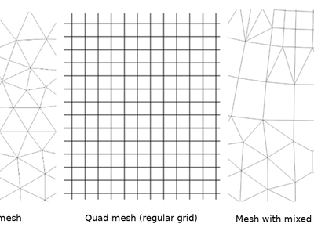

Alterar registro para QGIS 3.2¶

The greatest QGIS release ever! QGIS 3.2 brings a massive list of new changes - the highlights of which we will try to cover here. As always can we remind you that QGIS is an open source project and if you are able to, consider supporting our work through donations, sustaining memberships or contributions to the code documentation, web site and so on.
obrigado
We would like to thank the developers, documenters, testers and all the many folks out there who volunteer their time and effort (or fund people to do so). From the QGIS community we hope you enjoy this release! If you wish to donate time, money or otherwise get involved in making QGIS more awesome, please wander along to qgis.org and lend a hand!
QGIS is supported by donors and sustaining members. A current list of donors who have made financial contributions large and small to the project can be seen on our donors list. If you would like to become an official sustaining member, please visit our sustaining membership page for details. Supporting QGIS helps us to fund our six monthly developer meetings, maintain project infrastructure and fund bug fixing efforts. A complete list of current sustaining members is provided below - our very great thank you to all of our supporters!
O QGIS é um software gratuito e você não tem obrigação de pagar nada para usá-lo - na verdade, queremos encorajar as pessoas a usá-lo independentemente de qual seja seu status financeiro ou social - acreditamos que capacitar as pessoas com ferramentas de tomada de decisões espaciais resultar em uma sociedade melhor para toda a humanidade.
- Patrocinadores para a versão 3.2 do QGIS
- geral
- Ferramentas de mapa
- Funcionalidade: simplificar ferramenta de mapa agora também pode suavizar recursos
- Funcionalidade: Identify Tool com opções extras
- feição: Armazene também o estado expandido / recolhido dos nós no mapa Temas
- Funcionalidade: Modo “Zoom para seleção” automático para novas visualizações de mapa
- feição: Escolha do método de simplificação para simplificar a ferramenta de mapa
- feição: add zoom to related feature in forms
- Característica: Áreas / comprimentos / perímetros cartesianos em identificar resultados
- Expressões
- uso interface
- Funcionalidade: painel Camadas: indicadores para camadas de mapa filtradas
- Funcionalidade: Permitir a personalização do prefixo de filtros de localização
- Funcionalidade: Abertura de vetor e rasterização armazenada em serviços HTTP (S), FTP ou na nuvem
- Funcionalidade: calculadora rápida na barra de pesquisa do localizador
- Recurso: atalhos para painéis de alternância
- Recurso: Marcador de pesquisa no localizador
- Recurso: fechar e reverter ações do projeto
- Funcionalidade: indicador de alterações não guardadas na barra de título
- Recurso: atraso de dicas de mapa configurável
- Funcionalidade: Mover camada ou grupo para o painel superior da camada
- Recurso: copiar o conteúdo do painel de estatísticas para o botão da área de transferência
- Funcionalidade: páginas Definições de Pesquisa, Opções e Propriedades do Projeto do localizador
- Recurso: Indicadores para camadas e grupos incorporados
- simbologia
- Renderização
- Gestão de dados
- Formulários e Widgets
- Camada legenda
- Compositor de Mapas
- processando
- Funcionalidade: Algoritmo ‘Aderir à tabela de atributos’ melhorado
- Recurso: Carregar script do modelo
- Recurso: Algoritmo de Filtro de Recurso para Modelos de Processamento
- Recurso: histograma zonal
- Funcionalidade: Algoritmos de Port Union, Difference e Intersection para C ++
- Feature: algoritmo ‘Project points (cartesian)’
- Funcionalidade: valores de parâmetros dinâmicos para mais algoritmos
- Funcionalidade: Algoritmo de buffer multi-anel (distância constante)
- Funcionalidade: Novos algoritmos de “segmentar”
- Funcionalidade: Opção para criar pontos em todas as partes do polígono
- Recurso: algoritmo de recursos de rotação
- Recurso: sinuosidade de linha em “Adicionar atributos de geometria”
- Recurso: importar fotos georreferenciadas
- Funcionalidade: Trocar algoritmo de valores de coordenadas x / y
- Recurso: opção de ordem de classificação para “Adicionar campo incremental”
- Característica: Indicador para unidades de parâmetros de distância
- Funcionalidade: o log do algoritmo pode ser salvo / limpo / copiado
- Recurso: algoritmo de buffer de cunha
- Recurso: buffers de largura variável
- Recurso: Reclassificar algoritmos de varredura
- Funcionalidade: Algoritmo de união com uma única camada
- Opções de aplicativo e projeto
- Buscador
- Fornecedores de Dados
- Funcionalidade: Suporte para estilos de camadas
- Funcionalidade: Definir automaticamente o estilo padrão para camadas para camadas do ArcG Feature Server
- Recurso: consultas Oracle mais rápidas
- Funcionalidade: Restringir lista de tabelas para uma conexão de banco de dados Oracle com um esquema predefinido
- Recurso: suporte somente leitura para geometrias Oracle curvas
- complementos
- Feições 3D
Patrocinadores para a versão 3.2 do QGIS¶
A special thanks to all our sustaining members, sponsors and donors for helping us to make this release possible!
geral¶
Funcionalidade: O novo formato de arquivo de projeto compactado .qgz agora é o formato padrão¶
QGZ foi adicionado como um formato opcional no 3.0. Ter esse formato como o formato padrão facilitará muito o caminho para ir para um contêiner capaz de incorporar recursos como SVG, dados offline no GPKG, rampas de cores, plug-ins ou scripts.
imagem 29
Este recurso foi desenvolvido por OSLANDIA - Paul Blottiere <https://github.com/pblottiere> __
Recurso: Filtrando por valores de campo no Construtor de Consultas¶
Ao criar um novo filtro de expressão no construtor de consultas, agora você pode filtrar o painel de visualização de valores de campo.
imagem 30
Ao criar um novo filtro de expressão no construtor de consultas, agora você pode filtrar o painel de visualização de valores de campo.
Característica: Tela FULL Mapa via Ctrl-Shift-Tab¶
Além de Ctrl-Tab, agora você pode usar Ctrl-Shift-Tab, que mostrará o Mapa e APENAS o Mapa, sem mais barras de ferramentas ou botões (ou mesmo sem Título da Janela, em combinação com F11). Ótimo para projeção de mapa de tela cheia via Beamer ou em grandes telas. Você ainda pode ampliar e deslocar! (Baseado no trabalho de Mathieu Pellerin)
imagem 31
Este recurso foi desenvolvido por Richard Duivenvoorde
Ferramentas de mapa¶
Funcionalidade: simplificar ferramenta de mapa agora também pode suavizar recursos¶
A ferramenta de mapa simplificar recursos foi renomeada para “simplificar / suavizar recursos” e agora oferece suporte a suavização interativa de recursos.
imagem 2
Esse recurso foi financiado pelo North Road <https://north-road.com> __
Este recurso foi desenvolvido por Nyall Dawson (North Road) <https://north-road.com> __
Funcionalidade: Identify Tool com opções extras¶
Com as novas melhorias, o usuário agora pode usar ferramentas semelhantes à Seleção para identificar vários recursos.
Este recurso foi financiado pelo Conselho do Condado de Leicestershire e pelo Conselho Distrital de East Hampshire
Este recurso foi desenvolvido por Martin Dobias e Viktor Sklencar <https://www.lutraconsulting.co.uk> __
feição: Armazene também o estado expandido / recolhido dos nós no mapa Temas¶
Cada tema de mapa também registrará quais camadas, grupos e itens de legenda serão expandidos. Assim, quando um tema de mapa é selecionado, os estados expandidos / recolhidos são aplicados na árvore de camadas.
imagem 3
Este recurso foi financiado pelo ‘Arpa Piemonte (Dipartimento Tematico Geologia e Dissesto) dentro do projeto ERIKUS <https://www.arpa.piemonte.it/> `__
This feature was developed by Martin Dobias (Lutra Consulting) and Faunalia
Funcionalidade: Modo “Zoom para seleção” automático para novas visualizações de mapa¶
Uma nova vista de mapa pode ser configurada para ampliar automaticamente a seleção atual. Poderia ser combinado com diferentes temas de mapas, como neste exemplo.
imagem 4
Este recurso foi financiado pelo Technology One <https://www.technologyonecorp.com/> __
Este recurso foi desenvolvido por Nathan Woodrow <https://nathanw.net/> __
feição: Escolha do método de simplificação para simplificar a ferramenta de mapa¶
Isso permite que técnicas diferentes sejam usadas para simplificação na ferramenta interativa de simplificação de mapas, incluindo o algoritmo de simplificação “Visvalingam” mais agradável cartograficamente.
imagem 5
Esse recurso foi financiado pelo North Road <https://north-road.com> __
Este recurso foi desenvolvido por Nyall Dawson (North Road) <https://north-road.com> __
Característica: Áreas / comprimentos / perímetros cartesianos em identificar resultados¶
No QGIS 3.2, mostramos as áreas elipsoidais e cartesianas, comprimentos e perímetros separadamente no painel de identificação de resultados. Ver as duas medições distintas oferece aos usuários uma melhor compreensão de possíveis problemas em cálculos de área ou distância causados por projeções incorretas ou escolhas elipsoides.
imagem 7
Esse recurso foi financiado pelo North Road <https://north-road.com> __
Este recurso foi desenvolvido por Nyall Dawson (North Road) <https://north-road.com> __
Expressões¶
Expressões¶
- color _ grayscale _ average ()
- cor_mix_rgb()
- giro_coordenadas()
- cunha_amortecedor()
- afilado_amortecedor()
- amortecedor_por_m()
Nova variáveis:
- @projeto_casa
- @projeto_autor
- @projeto_abstrato
- @projeto_ciação_data
- @projeto_identificado
- @projeto_palavras-chave
Este recurso foi desenvolvido por Mathieu Pellerin, Nyall Dawson
expressão: Construtor de expressões mais útil¶
O construtor de expressões agora facilita a criação de expressões dentro do QGIS!
- O construtor agora mostra a descrição dos valores definidos pelos dados, incluindo o intervalo de valores esperados da expressão
- Ctrl + clicar em um nome de função na expressão atual abrirá automaticamente a ajuda para essa função
- Agora mostra indicadores para partes de expressões com erros
- Mostra uma lista completa de mensagens de erro obtidas a partir da análise da expressão
imagem 8
Este recurso foi financiado pelo Technology One <https://www.technologyonecorp.com/> __
Este recurso foi desenvolvido por Nathan Woodrow <https://nathanw.net/> __
uso interface¶
Funcionalidade: painel Camadas: indicadores para camadas de mapa filtradas¶
A visualização de árvore de camadas (ToC) da janela principal recebe suporte para indicadores que são mostrados quando uma camada de vetor tem um filtro aplicado. Isso torna mais fácil para os usuários entenderem que estão analisando um subconjunto de todos os dados. Clicar no ícone do indicador abre o construtor de consultas.
Isso adiciona um mini-framework para exibição de ícones extras nas exibições de árvore de camadas ao lado de nomes de camadas e grupos. O texto da dica de ferramenta pode ser associado a indicadores para fornecer um contexto extra aos indicadores. Além disso, um sinal é emitido quando o usuário clica em indicadores e ações personalizadas podem ser definidas. A ideia é que os indicadores possam ser usados no futuro para um relatório sutil de vários bits de informação, por exemplo:
- camada de mapa com geometrias inválidas
- camada de mapa com exceções de reprojeção on-the-fly
- camada de mapa tem fonte de dados em falta
- camada de mapa com CRS inválido
imagem 9
Este recurso foi financiado pelo ‘Arpa Piemonte (Dipartimento Tematico Geologia e Dissesto) dentro do projeto ERIKUS <https://www.arpa.piemonte.it/> `__
This feature was developed by Martin Dobias (Lutra Consulting) and Faunalia
Funcionalidade: Permitir a personalização do prefixo de filtros de localização¶
Agora, os prefixos dos filtros localizadores podem ser personalizados nas configurações do aplicativo na guia “Localizador”
imagem 10
Este recurso foi financiado pelo QGIS User Group Switzerland <https://qgis.ch> __
Este recurso foi desenvolvido por Denis Rouzaud, OPENGIS.ch <https://opengis.ch> __
Funcionalidade: Abertura de vetor e rasterização armazenada em serviços HTTP (S), FTP ou na nuvem¶
Em 3.2, os painéis de vetor e raster do gerenciador de origem de dados foram atualizados para simplificar a abertura de conjuntos de dados vetoriais e raster armazenados em serviços HTTP (S), FTP ou na nuvem. Suporte básico de autenticação HTTP (S) incluído.
imagem 11
Este recurso foi desenvolvido por Mathieu Pellerin <http://www.imhere-asia.com/> __
Funcionalidade: calculadora rápida na barra de pesquisa do localizador¶
QGIS 3.2 allows evaluation of simple expressions (well, actually ANY QGIS expression… so you could use aggregates and the like if you really wanted!) by entering “= ” followed by an expression into the locator bar. If a valid expression is entered, users are given an option to copy the result to the clipboard.
Por exemplo. digitar “= 10/3” mostra uma entrada do localizador “Copiar ‘3.3333333’ para a área de transferência”.
imagem 12
Esse recurso foi financiado pelo North Road <https://north-road.com> __
Este recurso foi desenvolvido por Nyall Dawson (North Road) <https://north-road.com> __
Recurso: atalhos para painéis de alternância¶
Ctrl + {no} atalho
Este recurso foi financiado pelo Technology One <https://www.technologyonecorp.com/> __
Este recurso foi desenvolvido por Nathan Woodrow <https://nathanw.net/> __
Recurso: Marcador de pesquisa no localizador¶
Permite procurar marcadores espaciais. Clicar duas vezes em um resultado da pesquisa aumentará o zoom do marcador.
Vídeo curto: https://www.youtube.com/watch?v=ymW4TU8QWy4
O novo filtro apresenta um prefixo “b” e com tr (“Marcadores espaciais”) como nome de exibição.
Este recurso foi desenvolvido por Klavs Pihlkjær
Recurso: fechar e reverter ações do projeto¶
Duas novas ações foram adicionadas ao menu “Projeto”
- “Close”: Fecha o projeto ativo, retornando a janela do QGIS para a lista “Recent Projects”
- “Reverter”: restaura o projeto ativo para o último estado salvo, descartando todas as alterações não salvas
imagem 13
Este recurso foi desenvolvido por Nathan Woodrow, Nyall Dawson
Funcionalidade: indicador de alterações não guardadas na barra de título¶
O QGIS 3.2 agora segue a abordagem padrão da interface do usuário de indicar que o projeto atual possui alterações não salvas adicionando um prefixo “*” ao nome do projeto na barra de título do aplicativo. Isso facilita ver se você tem alterações não salvas de uma só vez!
Esse recurso foi financiado pelo North Road <https://north-road.com> __
Este recurso foi desenvolvido por Nyall Dawson (North Road) <https://north-road.com> __
Recurso: atraso de dicas de mapa configurável¶
Este recurso foi desenvolvido por jdugge
Funcionalidade: Mover camada ou grupo para o painel superior da camada¶
Move a (s) camada (s) ou grupo (s) selecionado (s) para o topo do painel da camada.
Este recurso foi desenvolvido por Mie Winstrup
Recurso: copiar o conteúdo do painel de estatísticas para o botão da área de transferência¶
Agora é possível copiar a tabela de saída do painel de estatísticas para a área de transferência.
imagem 14
Este recurso foi desenvolvido por Mathieu Pellerin <http://www.imhere-asia.com/> __
Funcionalidade: páginas Definições de Pesquisa, Opções e Propriedades do Projeto do localizador¶
Vídeo curto: https://www.youtube.com/watch?v=duB2YekUmV0
O novo filtro apresenta um prefixo “s” e com tr (“Configurações”) como nome de exibição.
Este recurso foi desenvolvido por Klavs Pihlkjær
Recurso: Indicadores para camadas e grupos incorporados¶
As camadas e grupos de projetos incorporados agora são sinalizados por um indicador “incorporado”, tornando claro para os usuários quais camadas e grupos foram incorporados em um projeto.
Esse recurso foi financiado pelo North Road <https://north-road.com> __
Este recurso foi desenvolvido por Nyall Dawson (North Road) <https://north-road.com> __
simbologia¶
Característica: cores mais agradáveis para novas camadas¶
As cores “aleatórias” atribuídas às novas camadas do mapa não são mais “aleatórias”, mas sim selecionadas aleatoriamente de uma paleta predefinida de cores “visualmente agradáveis”. Diga adeus ao bebê feio vomitar camadas verdes!
Esse recurso foi financiado pelo North Road <https://north-road.com> __
Este recurso foi desenvolvido por Nyall Dawson (North Road) <https://north-road.com> __
Renderização¶
Recurso: Decoração melhorada dos direitos autorais do mapa¶
- Suporte de expressão para o texto de copyright.
- Opções aprimoradas de formatação de texto, incluindo sombras, contornos, planos de fundo, etc.
Este recurso foi desenvolvido por Mathieu Pellerin <http://www.imhere-asia.com/> __
Recurso: O tamanho da fonte da barra de escala da janela principal e a família podem ser personalizados¶
Este recurso foi desenvolvido por Mathieu Pellerin <http://www.imhere-asia.com/> __
Recurso: Caminho e tamanho SVG personalizados para a decoração da seta norte¶
Este recurso foi desenvolvido por Mathieu Pellerin <http://www.imhere-asia.com/> __
Gestão de dados¶
Recurso: Atualizar uma visão materializada¶
A partir do navegador, com um clique direito em uma visão materializada, você pode atualizá-lo.
imagem 15
Este recurso foi desenvolvido por Etienne Trimaille <https://github.com/Gustry> __
Recurso: suporte Z e M para edição off-line¶
A edição offline agora também suporta camadas com coordenadas Z e M.
Este recurso foi financiado pelo Oester Messtechnik <https://messtechnik.ch/> __
Este recurso foi desenvolvido por Matthias Kuhn, OPENGIS.ch <https://opengis.ch> __
Matéria: Metadados para projetos do QGIS¶
Continuando o trabalho de metadados iniciado no QGIS 3.0, o 3.2 agora suporta metadados para projetos do QGIS. Isso permite que metadados detalhados sejam definidos nas propriedades do projeto, incluindo resumos, palavras-chave, detalhes de contato, links, etc.
imagem 16
Este recurso foi financiado por Arpa Piemonte (Departamento de Geologia e Medo) dentro do projeto ERIKUS
This feature was developed by Nyall Dawson (North Road) and Faunalia
Formulários e Widgets¶
Recurso: Layout de várias colunas para o widget de relação de valor de seleção múltipla¶
O widget de relação de valor com seleção múltipla ativada agora suporta várias colunas. Isso permite melhor uso do espaço da tela horizontal.
imagem 17
Este recurso foi financiado pelo ‘Land Registry and Surveying Office do Canton of Zug <https://www.zg.ch/behoerden/direktion-des-innern/grundbuch-und-vermessungsamt/gis-fachstelle> `__
Este recurso foi desenvolvido por David Signer, OPENGIS.ch <https://opengis.ch> __
Funcionalidade: Permitir usar uma URL para formulários de atributos personalizados (arquivo da interface do usuário)¶
O arquivo da interface do usuário será baixado em todas as sessões no primeiro uso. Isso torna possível distribuir facilmente os arquivos atualizados da interface do usuário para os clientes.
Este recurso foi financiado por SIRS <http://www.sirs-fr.com> __
Este recurso foi desenvolvido por Denis Rouzaud, OPENGIS.ch <https://opengis.ch> __
Recurso: formulários de detalhamento (em cascata)¶
O QGIS 3.2 introduz suporte de formulário drill down (em cascata), onde os valores disponíveis em um campo dependem dos valores de outros campos. Esse recurso permite que os usuários criem expressões de “relação de valor” com base no valor atual de outro campo no mesmo formulário. Quando o usuário modifica o valor de um campo, as opções disponíveis em todos os campos relacionados são filtradas para corresponder ao novo valor, permitindo uma estratégia de filtragem hierárquica (drill down ou cascata) dentro de um formulário.
imagem 18
Este recurso foi financiado por Grant Boxer, NaturalGIS, Tudor Bărăscu, NotioGIS, République e cantão de Neuchâtel, Arpa Piemonte, Nelson Silva, Grupo de Usuários Dinamarqueses QGIS, Bo Victor Thomsen e Lene Fischer, North River Geographic
Este recurso foi desenvolvido por Alessandro Pasotti (North Road) <https://north-road.com> __
Camada legenda¶
feição: Texto opcional em cima de símbolos para camadas vetoriais¶
Esse recurso permite que os usuários adicionem informações extras aos símbolos da legenda.
imagem 19
Este recurso foi financiado pelo ‘Arpa Piemonte (Dipartimento Tematico Geologia e Dissesto) dentro do projeto ERIKUS <https://www.arpa.piemonte.it/> `__
This feature was developed by Martin Dobias (Lutra Consulting) and Faunalia
Funcionalidade: Copiar e Colar Grupo / Camadas de um projeto QGIS para outro.¶
Permitindo copiar e colar grupos ou camadas entre projetos e perfis.
Ao criar um novo filtro de expressão no construtor de consultas, agora você pode filtrar o painel de visualização de valores de campo.
Compositor de Mapas¶
feição: Fonte de tabela definida por dados para itens da tabela de atributos¶
Quando uma tabela de atributos é definida como uma fonte “Recursos de camada”, esse novo recurso permite que a camada vetorial subjacente a partir da qual os recursos de origem sejam definidos.
(Todos os atributos de tabela existentes (configurações de coluna) são deixados intactos, portanto, a configuração de uma tabela de dados definida em uma camada com campos diferentes resultará em colunas vazias na tabela.)
Este recurso foi financiado pelo Kartoza / InaSAFE <http://kartoza.com/en/> __
Este recurso foi desenvolvido por Nyall Dawson (North Road) <https://north-road.com> __
Funcionalidade: metadados do projeto incorporados em exportações de layout¶
Salvar um layout de impressão em SVG, PDF ou imagens agora incorporará todos os metadados do projeto no arquivo criado. O suporte para diferentes elementos de metadados depende do formato de exportação individual.
Este recurso foi financiado por Arpa Piemonte (Departamento de Geologia e Medo) dentro do projeto ERIKUS
Este recurso foi desenvolvido por Nyall Dawson (North Road) <https://north-road.com> __
Funcionalidade: Melhor formatação do texto da barra de ferramentas¶
O QGIS 3.2 permite que toda a gama de opções de formatação de texto seja usada no texto da barra de ferramentas, por ex. buffers, sombras e formas de fundo.
O texto da barra de escala ilegível é coisa do passado!
Esse recurso foi financiado pelo North Road <https://north-road.com> __
Este recurso foi desenvolvido por Nyall Dawson (North Road) <https://north-road.com> __
processando¶
Funcionalidade: Algoritmo ‘Aderir à tabela de atributos’ melhorado¶
O algoritmo ‘Aderir à tabela de atributos’ foi atualizado para oferecer suporte a associações um-para-muitos (isto é, criar recursos separados para cada recurso correspondente), bem como uma opção para descartar registros que não puderam ser unidos. Além disso, um prefixo opcional para campos unidos agora pode ser especificado.
imagem 20
Este recurso foi desenvolvido por Mathieu Pellerin, Nyall Dawson <http://www.imhere-asia.com/> __
Recurso: Carregar script do modelo¶
Nova opção para carregar scripts de processamento de um modelo personalizado
imagem 21
Este recurso foi desenvolvido por Matteo Ghetta (Faunalia) <http://www.faunalia.eu/> __
Recurso: Algoritmo de Filtro de Recurso para Modelos de Processamento¶
Adicione um novo algoritmo de filtro de recurso para o modelador de processamento. Permite filtrar recursos de uma fonte com base em expressões e enviar recursos correspondentes para saídas diferentes como produtos finais ou pipeline de algoritmo diferente para processamento adicional.
Leia este post no blog para mais informações <http://www.opengis.ch/2018/05/28/how-to-filter-features-in-qgis-using-the-graphical-processing-modeler/> `__ .
imagem 22
Este recurso foi financiado pelo QGIS User Group Switzerland <https://qgis.ch> __
Este recurso foi desenvolvido por Matthias Kuhn, OPENGIS.ch <https://opengis.ch> __
Recurso: histograma zonal¶
Esse novo algoritmo acrescenta campos que representam contagens de cada valor exclusivo de uma camada de raster contida em zonas definidas como polígonos.
imagem 23
Este recurso foi desenvolvido por Mathieu Pellerin <http://www.imhere-asia.com/> __
Funcionalidade: Algoritmos de Port Union, Difference e Intersection para C ++¶
Os algoritmos de geoprocessamento nativos do QGIS foram portados do Python para o C ++. Além do aumento de desempenho, vários bugs foram resolvidos com esta atualização.
Este recurso foi financiado pelo InaSAFE DFAT <https://www.dfat.gov.au/> __
Este recurso foi financiado pelo InaSAFE DFAT <https://www.dfat.gov.au/> __
Feature: algoritmo ‘Project points (cartesian)’¶
Este novo algoritmo de Processamento projeta pontos de uma camada de ponto de entrada por uma distância especificada e por um rolamento (azimute). Suporta parâmetros dinâmicos para a distância e o rumo, de modo que a distância e o rumo possam ser obtidos de valores ou expressões de campo.
Este recurso foi financiado por Nyall Dawson (North Road) <https://north-road.com> __
Este recurso foi desenvolvido por Nyall Dawson (North Road) <https://north-road.com> __
Funcionalidade: valores de parâmetros dinâmicos para mais algoritmos¶
O QGIS 3.2 estende o trabalho iniciado em 3.0 para permitir parâmetros “dinâmicos” para algoritmos de processamento selecionados. Os parâmetros dinâmicos permitem que os usuários usem expressões ou valores de campo para especificar o valor de um parâmetro enquanto o algoritmo é executado. o tamanho do buffer pode ser calculado dinamicamente para cada recurso individual armazenado em buffer.
Em 3.2, os seguintes algoritmos suportam parâmetros dinâmicos:
- Excluir orifícios
- Remover Vértices Duplicados
- Simplificar
- suavizar
- Aderir à grade
- Subdidivir
- Transecto de shapes
- Traduzir
Esse recurso foi financiado pelo North Road <https://north-road.com> __
Este recurso foi desenvolvido por Nyall Dawson (North Road) <https://north-road.com> __
Funcionalidade: Algoritmo de buffer multi-anel (distância constante)¶
Esse novo algoritmo calcula o buffer de vários anéis (‘donuts’) para todos os recursos em uma camada de entrada, usando uma distância fixa ou dinâmica e um número de anéis.
Este recurso foi desenvolvido por Alex Bruy
Funcionalidade: Novos algoritmos de “segmentar”¶
No QGIS 3.2, dois novos algoritmos para segmentar geometrias curvas foram adicionados ao Processing.
“Segmentar pela distância máxima”: A segmentação é executada especificando a distância máxima permitida do deslocamento entre a curva original e a representação segmentada.
“Segmentar por ângulo máximo”: A segmentação é executada especificando o ângulo de raio máximo permitido entre os vértices na geometria reta (por exemplo, o ângulo do arco criado a partir do centro do arco original para vértices de saída em consenso na geometria linearizada).
Esse recurso foi financiado pelo North Road <https://north-road.com> __
Este recurso foi desenvolvido por Nyall Dawson (North Road) <https://north-road.com> __
Funcionalidade: Opção para criar pontos em todas as partes do polígono¶
Os algoritmos “Centróide” e “Ponto na superfície” têm uma nova opção para criar pontos para cada parte individual das geometrias de entrada.
Este recurso foi desenvolvido por Mathieu Pellerin <http://www.imhere-asia.com/> __
Recurso: algoritmo de recursos de rotação¶
Este novo algoritmo permite a rotação de recursos por um ângulo definido. A rotação pode ocorrer em torno de um ponto pré-definido ou do centróide de cada característica individual.
Esse recurso foi financiado pelo North Road <https://north-road.com> __
Este recurso foi desenvolvido por Nyall Dawson (North Road) <https://north-road.com> __
Recurso: sinuosidade de linha em “Adicionar atributos de geometria”¶
O algoritmo “Add Geometry Attributes” agora calcula a sinuosidade da linha e a distância direta para as camadas da linha.
Esse recurso foi financiado pelo North Road <https://north-road.com> __
Este recurso foi desenvolvido por Nyall Dawson (North Road) <https://north-road.com> __
Recurso: importar fotos georreferenciadas¶
No QGIS 3.2, um novo algoritmo “Importar fotos com geotag” foi adicionado ao Processing. Ele permite a seleção de uma pasta que procurará arquivos jpg que foram georreferenciados e cria uma camada PointZ com o resultado, com atributos para caminho da foto, altitude, direção e registro de data e hora.
Opcionalmente, a varredura pode ser recursiva e você pode criar uma tabela opcional de fotos que não puderam ser lidas ou com geotags ausentes.
O algoritmo define automaticamente a tabela de saída para usar um widget de recursos externo para exibir as fotos vinculadas no formulário de atributo.
imagem 24
Esse recurso foi financiado pelo North Road <https://north-road.com> __
Este recurso foi desenvolvido por Nyall Dawson (North Road) <https://north-road.com> __
Funcionalidade: Trocar algoritmo de valores de coordenadas x / y¶
Esse algoritmo troca os valores das coordenadas X e Y nas geometrias de entrada. Ele pode ser usado para reparar geometrias que acidentalmente tiveram seus valores de latitude e longitude invertidos.
Esse recurso foi financiado pelo North Road <https://north-road.com> __
Este recurso foi desenvolvido por Nyall Dawson (North Road) <https://north-road.com> __
Recurso: opção de ordem de classificação para “Adicionar campo incremental”¶
Essa alteração permite que os usuários configurem, opcionalmente, uma ordem de classificação para usar ao atribuir valores no algoritmo Add Incremental Field. Anteriormente, os valores eram sempre adicionados usando a ordem original dos recursos. Com essa mudança, os usuários podem controlar a ordem na qual os recursos são atribuídos a valores.
Esse recurso foi financiado pelo North Road <https://north-road.com> __
Este recurso foi desenvolvido por Nyall Dawson (North Road) <https://north-road.com> __
Característica: Indicador para unidades de parâmetros de distância¶
Quando um algoritmo usa um parâmetro do tipo “distância”, as unidades serão mostradas agora ao lado do parâmetro. Isso evita a confusão ao executar algoritmos que usam distâncias onde a unidade depende de uma camada ou parâmetro CRS - por exemplo, o parâmetro distance no algoritmo buffer dá a distância em unidades de camada … então agora no QGIS 3.2 nós mostramos essas unidades diretamente dentro do diálogo. Espero que isso leve a menos confusão do usuário e “buffers de 1000 graus” acidentais!
Além disso - se a unidade estiver em graus, um pequeno ícone de aviso será exibido ao lado do parâmetro. A dica de ferramenta para este ícone aconselha os usuários a reprojetarem dados em um sistema de coordenadas local projetado e adequado.
Esse recurso foi financiado pelo North Road <https://north-road.com> __
Este recurso foi desenvolvido por Nyall Dawson (North Road) <https://north-road.com> __
Funcionalidade: o log do algoritmo pode ser salvo / limpo / copiado¶
Na caixa de diálogo de execução do algoritmo, novos botões foram adicionados para permitir que os usuários salvem o log atual (em arquivos de texto ou HTML), copiem o conteúdo do log para a área de transferência e limpem o log.
Este recurso foi financiado pela SMEC / SJ
Este recurso foi desenvolvido por Nyall Dawson (North Road) <https://north-road.com> __
Recurso: algoritmo de buffer de cunha¶
Este novo algoritmo cria buffers em forma de cunha a partir de pontos de entrada.
O parâmetro azimute fornece o ângulo (em graus) para o meio da cunha para apontar. A largura do buffer (em graus) é especificada pelo parâmetro width. Observe que a cunha se estenderá até a metade da largura angular de cada lado da direção do azimute. O raio externo do buffer é especificado pelo raio externo e, opcionalmente, um raio interno também pode ser especificado.
O algoritmo suporta parâmetros dinâmicos para azimute, largura e raio.
A saída nativa desse algoritmo é de geometrias CurvePolygon, mas elas podem ser automaticamente segmentadas para polígonos, dependendo do formato de saída.
Esse recurso foi financiado pelo North Road <https://north-road.com> __
Este recurso foi desenvolvido por Nyall Dawson (North Road) <https://north-road.com> __
Recurso: buffers de largura variável¶
Novos algoritmos de Processamento foram adicionados para criar buffers de largura variável, incluindo buffers afilados (com um diâmetro de início e fim especificado) e buffers de largura variável a partir de valores de string de linha m.
Esse recurso foi financiado pelo North Road <https://north-road.com> __
Este recurso foi desenvolvido por Nyall Dawson (North Road) <https://north-road.com> __
Recurso: Reclassificar algoritmos de varredura¶
Dois novos algoritmos de reclassificação de rasterização QGIS nativos foram adicionados ao Processing. Estes são simples de usar, mas rápidos e estáveis, e funcionam para QUALQUER tipo de camada de varredura suportada pelo QGIS!
- Reclassificar por camada: reclassifica uma imagem usando os intervalos especificados por meio de campos min / max / value de uma tabela de vetores
- Reclassificar por tabela: reclassifica uma imagem usando uma tabela fixa inserida por usuários na caixa de diálogo do algoritmo
Este recurso foi financiado pela SMEC / SJ
Este recurso foi desenvolvido por Nyall Dawson (North Road) <https://north-road.com> __
Funcionalidade: Algoritmo de união com uma única camada¶
O algoritmo de união agora pode ser executado com apenas uma única camada de entrada para resolver quaisquer sobreposições entre os recursos da camada. Por exemplo, se uma área é coberta por três recursos, essa área será cortada desses recursos e três novos recursos serão adicionados, copiando os atributos dos recursos originais.
imagem 25
Este recurso foi financiado pelo InaSAFE DFAT <https://www.dfat.gov.au/> __
Este recurso foi desenvolvido por Martin Dobias (Lutra Consulting) <https://www.lutraconsulting.co.uk/> __
Opções de aplicativo e projeto¶
Recurso: camadas obrigatórias no projeto¶
As camadas necessárias não podem ser removidas do projeto. Isso adiciona segurança extra para proteger os usuários do projeto da remoção de camadas que possam achar desnecessárias (por exemplo, usados em junções, relações, expressões).
imagem 26
Este recurso foi financiado pelo ‘Arpa Piemonte (Dipartimento Tematico Geologia e Dissesto) dentro do projeto ERIKUS <https://www.arpa.piemonte.it/> `__
This feature was developed by Martin Dobias (Lutra Consulting) and Faunalia
Funcionalidade: Salvando e carregando projetos no banco de dados PostgreSQL¶
Os usuários podem agora salvar seus projetos dentro de um banco de dados PostgreSQL. O projeto pode ser salvo no menu ** Projects> Save To> PostgreSQL ** e carregado usando o menu ** Projects> Load From> PostgreSQL **. Os projetos salvos no banco de dados podem ser carregados também através da estação do navegador (os projetos são exibidos no esquema em que foram salvos, junto com outras camadas).
Salvar / carregar projetos QGIS deve ser explicitamente habilitado nas configurações de conexão do PostgreSQL: há uma nova opção “Permitir salvar / carregar projetos QGIS no banco de dados”, que é desativada por padrão.
Foi introduzida uma nova API que permite a criação de implementações personalizadas de armazenamento de projetos (pode ser usado por plugins). QEP relacionado: https://github.com/qgis/QGIS-Enhancement-Proposals/issues/118
Este recurso foi financiado pelo ‘Arpa Piemonte (Dipartimento Tematico Geologia e Dissesto) dentro do projeto ERIKUS <https://www.arpa.piemonte.it/> `__
This feature was developed by Martin Dobias, Peter Petrik (Lutra Consulting) and Faunalia
Buscador¶
Recurso: Salvar / carregar conexões para ladrilhos XYZ¶
No painel Navegador, as entradas de XYZ Tiles podem ser exportadas / importadas para / de um arquivo XML.
imagem 27
Ao criar um novo filtro de expressão no construtor de consultas, agora você pode filtrar o painel de visualização de valores de campo.
Funcionalidade: o caminho inicial do projeto pode ser definido manualmente¶
Este novo recurso do QGIS 3.2 permite que o caminho inicial do projeto (que é usado pelo navegador para criar o item ‘Projeto Home’) seja definido pelos usuários para um projeto, em vez de sempre corresponder ao local onde o projeto é salvo.
Isso permite que os usuários definam o projeto como uma pasta que contém dados e outros conteúdos, e é especialmente útil para organizações onde os projetos do QGIS não são armazenados na pasta raiz de um ‘projeto’ organizacional.
Os caminhos iniciais do projeto também podem ser definidos para caminhos relativos, em cujo caso eles serão relativos ao local salvo do projeto.
O caminho pode ser definido através da caixa de diálogo Propriedades do projeto ou clicando com o botão direito do mouse no item do navegador do Project Home e selecionando ‘Set Project Home’.

Este recurso foi financiado pela SMEC / SJ
Este recurso foi desenvolvido por Nyall Dawson (North Road) <https://north-road.com> __
Fornecedores de Dados¶
Funcionalidade: Suporte para estilos de camadas¶
O trabalho inicial foi feito para introduzir camadas de malha que suportam a exibição de dados em malhas estruturadas ou não estruturadas (grades), além de camadas raster e vetoriais. Este ainda é um trabalho em andamento, esperado para estar totalmente pronto no QGIS 3.4. O trabalho até o momento levou à criação de uma nova biblioteca MDAL para manipulação de diferentes formatos de dados baseados em malha e há novas APIs introduzidas sob o capô, no entanto, a interface do usuário ainda não está implementada.
Para mais informações, veja:
https://github.com/qgis/QGIS-Enhancement-Proposals/issues/119
e
https://github.com/lutraconsulting/MDAL

Este recurso foi desenvolvido por Peter Petrik e Martin Dobias (Lutra Consulting) <https://www.lutraconsulting.co.uk> __
Funcionalidade: Definir automaticamente o estilo padrão para camadas para camadas do ArcG Feature Server¶
Quando as camadas de um Feature Server são carregadas no QGIS 3.2, elas terão automaticamente o mesmo estilo aplicado conforme foi especificado para aquela camada no servidor, correspondendo a aparência da camada quando ela é carregada no ArcGIS.
Este recurso foi financiado pela SMEC / SJ
Este recurso foi desenvolvido por Nyall Dawson (North Road) <https://north-road.com> __
Recurso: consultas Oracle mais rápidas¶
Certas operações são muito aceleradas para camadas do Oracle, por exemplo valor insensível a maiúsculas corresponde a recursos.
Esse recurso foi financiado pelo North Road <https://north-road.com> __
Este recurso foi desenvolvido por Nyall Dawson (North Road) <https://north-road.com> __
Funcionalidade: Restringir lista de tabelas para uma conexão de banco de dados Oracle com um esquema predefinido¶
Essa alteração permite que um esquema seja configurado nas propriedades de conexão para uma conexão de banco de dados Oracle. Se definido, apenas as tabelas nesse esquema serão verificadas e listadas para a conexão.
Anteriormente, existia a opção de restringir a varredura às tabelas que pertenciam ao usuário, mas essa opção não suporta o caso de uso em que uma conexão deve acessar tabelas de um usuário diferente e a configuração padrão “varrer tudo” é muito cara geralmente leva vários minutos para ser executada, especialmente quando são mostradas tabelas sem geometria).
Este recurso foi financiado pelo Open Spatial <http://www.openspatial.com> _
Este recurso foi desenvolvido por Nyall Dawson (North Road) <https://north-road.com> __
Recurso: suporte somente leitura para geometrias Oracle curvas¶
Anteriormente, essas geometrias eram descartadas silenciosamente.
Este recurso foi financiado pelo Open Spatial <http://www.openspatial.com> _
Este recurso foi desenvolvido por Nyall Dawson (North Road) <https://north-road.com> __
complementos¶
Funcionalidade: Adicionar histórico de consultas no DB Manager¶
No 3.2, é possível armazenar consultas SQL. O histórico de consultas está disponível na guia Janela da SQL do plug-in do DB Manager.

Ao criar um novo filtro de expressão no construtor de consultas, agora você pode filtrar o painel de visualização de valores de campo.
Funcionalidade: Execução SQL do DB Manager em segundo plano¶
Este recurso foi desenvolvido por Paul Blottiere
Feições 3D¶
Recurso: Polígonos 3D: Opcionalmente, gerar faces traseiras¶
Às vezes, os conjuntos de dados com polígonos 3D não têm ordenação consistente de vértices (no sentido horário versus anti-horário) e causam resultados sub-ótimos na visualização 3D: alguns polígonos (paredes) parecem estar ausentes se o preenchimento de face traseira estiver ativado ou alguns polígonos são sombreados incorretamente se o abatimento de face traseira estiver desabilitado. Com a nova opção ** Adicionar faces de retorno ** ativada, o tessellator gerará triângulos em ambas as direções (frente e verso), o que melhora bastante a qualidade de renderização de tais conjuntos de dados.
A única desvantagem ao usar esta opção é que mais memória gráfica é usada (quantidade dupla de dados de vértice). Certifique-se de definir o modo de seleção para “Voltar” ao usar essa opção, caso contrário, não haverá diferença visível, pois a cena ainda renderizaria polígonos com sombreamento incorreto.
A imagem contém um conjunto de dados de prédios 3D Praga disponível gratuitamente.

Este recurso foi desenvolvido por Martin Dobias (Lutra Consulting) <https://www.lutraconsulting.co.uk/> __